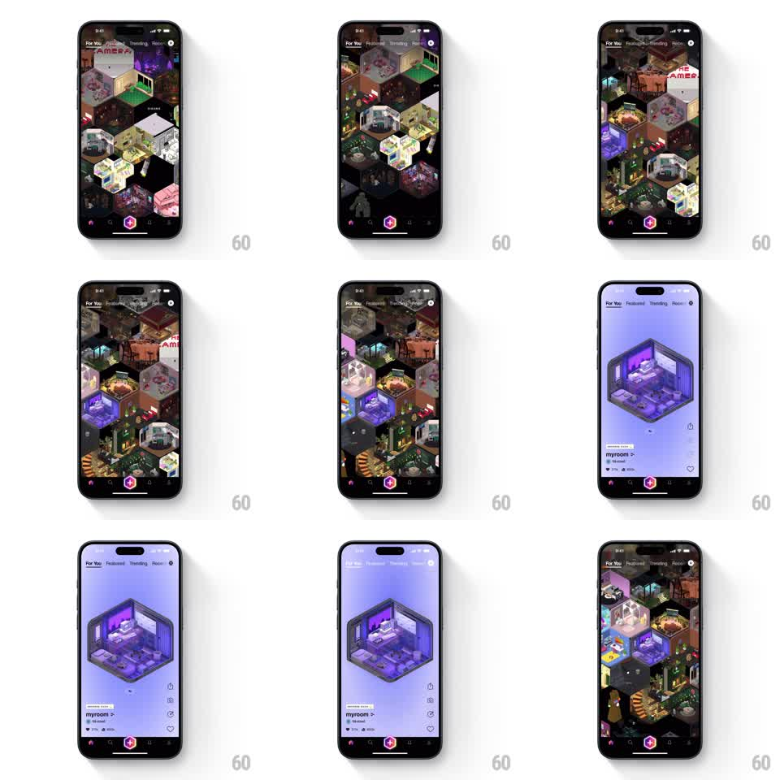

Media
Frame-by-frame

Rebuild this interaction 1:1: Rooms' canvas explore - an isometric hexagonal grid of voxel rooms that zooms seamlessly into a single-room detail view on tap and back out on dismiss.

Rebuild this interaction 1:1: Rooms' canvas explore - an isometric hexagonal grid of voxel rooms that zooms seamlessly into a single-room detail view on tap and back out on dismiss. ## Integration Integration: stack-agnostic spec - springs given as stiffness/damping, timed motions as duration + curve; map every value to your framework and animation library of choice. ## Scene Near-black canvas filled with an isometric honeycomb of tiny voxel diorama rooms, each hex cell a miniature lit interior. Top tabs: For You, Featured, Trending, Recent. Detail view: the tapped room large on a lavender gradient field, with a room card (name "myroom", owner, likes/comments counts) and a right-side action rail. ## Motion spec Pattern: shared-element isometric zoom. - The grid scrolls in all directions with inertia, cells gently bobbing at idle (translateY +-3px, staggered phases). - Tap a room: the tapped hex becomes the shared element - it scales and translates to center stage (spring stiffness ~260, damping ~26) while the grid falls away (fades and scales down slightly) and the background crossfades from black to the room's lavender. - The room's isometric camera slowly orbits (rotate +-8deg, 4s ease-in-out alternate) in detail view; the card and action rail slide in from bottom and right (250ms, 60ms apart). - Dismiss (tap outside or back): the exact reverse - room shrinks back into its hex cell as the grid rises back; the cell must land in its original slot. ## Calibration - The zoom keeps the room's isometric angle constant - it grows, it does not re-perspective. - Grid-to-detail is one continuous motion; never route through a fade-to-black. ## Reduced motion Crossfade between grid and detail at fixed scales. ## Don't miss - Every hex cell is a different miniature interior with its own lighting - the grid is a city of lit windows. - The detail background tint derives from the room's own palette.